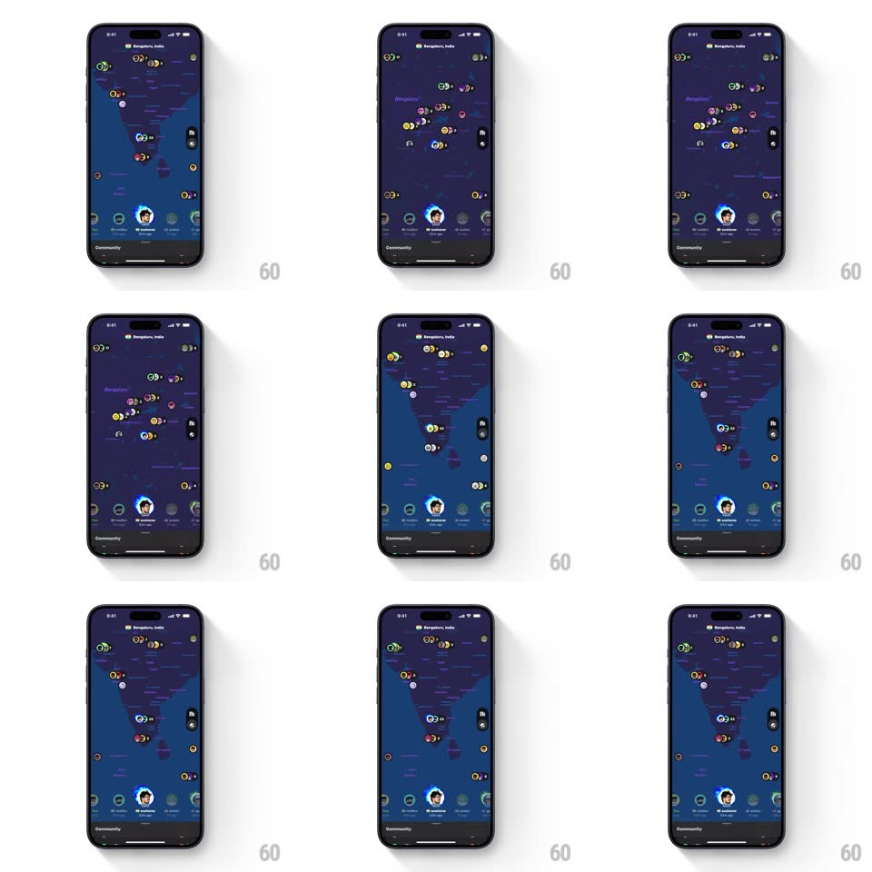

Media
Frame-by-frame

Rebuild this interaction 1:1: Supersonic's community map - a dark map (centered on Bengaluru, India) dotted with clustered member avatar pins that fluidly de-cluster into individual labeled avatars as you zoom, with a bottom bar holding the member carousel and a "Community" label.

Rebuild this interaction 1:1: Supersonic's community map - a dark map (centered on Bengaluru, India) dotted with clustered member avatar pins that fluidly de-cluster into individual labeled avatars as you zoom, with a bottom bar holding the member carousel and a "Community" label.
## Integration
Integration: stack-agnostic spec - springs given as stiffness/damping, timed motions as duration + curve; map every value to your framework and animation library of choice.
## Scene
Dark navy map filling the screen, small circular avatar pins (some clustered with count rings). Bottom: a dark bar with a horizontal strip of member avatars, the center one enlarged and glowing with a name below ("Rohan" style), "Community" label at the base.
## Motion spec
Pattern: zoom-driven cluster/de-cluster fluidity.
- Pinch zoom: the map scales under the gesture; when a cluster's members would overlap less than 60%, the cluster pops apart - child avatars spring outward to their true coordinates (spring ~280/16, staggered 20ms) while the cluster ring dissolves (scale 1.4 + fade, 250ms).
- Zoom out: members merge into the nearest cluster - avatars slide along curved paths into the cluster point (400ms, ease-in) and the count badge pops (scale 0.5 -> 1, spring ~420/18).
- Location labels fade in past a zoom threshold (250ms) and sharpen; they never collide - lower-priority labels yield.
- Tapping a bottom-bar avatar: the map pans and zooms to that member (flight-style ease, 600ms), their pin blooming a glow ring (scale 1 -> 1.6, 400ms) as the bar highlights them.
## Calibration
- Cluster transitions are physics-springs, not linear fades - members feel placed, not teleported.
- The bottom bar stays fixed and stable while the map churns - the anchor of the screen.
## Reduced motion
Clusters fade apart/together; map pans without flight easing.
## Don't miss
- De-clustering is the delight: watch a "12" ring burst into twelve real people.
- The selected member glows on BOTH surfaces at once - map pin and bar avatar in sync.